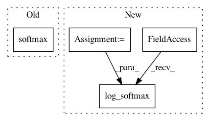

3c5330d8130ec7e03e5df28b199ab0357b559301,official/bert/bert_models.py,BertPretrainLayer,call,#BertPretrainLayer#Any#,111
Before Change
lm_output = tf.keras.backend.log(lm_output)
sentence_output = self.next_sentence_dense(pooled_output)
sentence_output = tf.keras.backend.softmax(sentence_output)
sentence_output = tf.keras.backend.log(sentence_output)
return (lm_output, sentence_output)
After Change
lm_output = tf.nn.log_softmax(lm_output, axis=-1)
logits = tf.matmul(pooled_output, self.next_seq_weights, transpose_b=True)
logits = tf.nn.bias_add(logits, self.next_seq_bias)
sentence_output = tf.nn.log_softmax(logits, axis=-1)
return (lm_output, sentence_output)
class BertPretrainLossAndMetricLayer(tf.keras.layers.Layer):
In pattern: SUPERPATTERN
Frequency: 3
Non-data size: 4
Instances
Project Name: tensorflow/models
Commit Name: 3c5330d8130ec7e03e5df28b199ab0357b559301
Time: 2019-07-24
Author: saberkun@users.noreply.github.com
File Name: official/bert/bert_models.py
Class Name: BertPretrainLayer
Method Name: call
Project Name: pytorch/examples
Commit Name: 32c7386aef93737926069ee284d827f8e954e086
Time: 2017-01-17
Author: adam.paszke@gmail.com
File Name: mnist/main.py
Class Name: Net
Method Name: forward